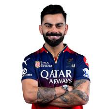
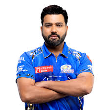

Virat Kohli is an Indian top-order batter and one of the highest run-scorers in the history of international cricket. He has recorded 85 international centuries across his career, holding the outright world record for the most centuries in One Day Internationals (54). Before stepping away from the Test and T20I formats, he accumulated 30 Test centuries and one T20I century. He was a core member of the Indian squads that won the 2011 ODI World Cup, the 2013 Champions Trophy, and the 2024 T20 World Cup. In the Indian Premier League (IPL), Kohli has exclusively represented the Royal Challengers Bengaluru (RCB) since the tournament's inaugural season in 2008. He is the all-time leading run-scorer in the tournament's history with 8,661 runs in 267 matches. He holds the official tournament records for the most runs scored in a single season (973 runs in 2016) and the most career centuries in the IPL (8). Ahead of the 2025 mega auction, RCB retained Kohli for a massive ₹21 Crore. During the 2025 season, he produced a highly statistical campaign, scoring 657 runs in 15 matches with a batting average of 54.75 and a strike rate of 144.71. He contributed 43 runs in the final against the Punjab Kings, playing a foundational role in helping RCB secure their first-ever IPL trophy to end an 18-year title drought.
| IPL Debut | 2008 |
|---|---|
| Specialization | Batter |
| Date of Birth | 05 November 1988 |
| Matches | 269 |

A living legend of the game, MS Dhoni will once again don the CSK jersey in TATA IPL 2026. The five-time IPL-winning captain - joint-most for a captain in the league - is known for his calm demeanour and astute leadership, and continues to be a pillar of strength for the franchise. Dhoni has amassed close to 5,500 runs and is also the only wicket-keeper to have effected more than 200 dismissals behind the stumps, in the IPL. While his role as a batter has evolved over the years, his ability to finish games remains unmatched. The 44-year-old once again wore the captain’s hat in IPL 2025, after an injury ruled full-time skipper Ruturaj Gaikwad out of the season. Retained as an uncapped player and back for the 2026 season, CSK talisman Dhoni will be crucial both as a mentor and a player as the franchise aims for a record sixth IPL title.
| IPL Debut | 2008 |
|---|---|
| Specialization | Wicketkeeper Batter |
| Date of Birth | 07 July 1981 |
| Matches | 278 |

A player who truly needs no introduction, Rohit Sharma is the undisputed titan of Indian cricket and the heart of the Mumbai Indians legacy. His IPL journey began in 2008 with the Deccan Chargers and soon a year later, he produced a memorable moment by claiming a hat-trick against his future team. Since joining the Mumbai Indians in 2011, he has etched his name into the history books by scripting some of its most glorious chapters. Leading from the front, he guided MI to five IPL titles (2013, 2015, 2017, 2019, 2020), building a legacy defined by consistency and big-match temperament and making the franchise one of the most successful teams in the kleague. With over 7000 runs and the record for the most sixes by an Indian in the league, Rohit Sharma stands tall as one of the ultimate stalwarts of TATA IPL. Entering the 2026 season, Rohit will be stepping into his 19th consecutive IPL edition, a legendary feat that will be achieved by only three other players in the history of the tournament. Having led India to a historic T20 World Cup title in 2024, he brings a renewed sense of championship hunger to the squad. As Mumbai Indians hunt their record-breaking sixth title, Rohit’s presence in the dugout and at the top of the order remains the most lethal weapon in MI's arsenal.
| IPL Debut | 2008 |
|---|---|
| Specialization | Batter |
| Date of Birth | 30 April 1987 |
| Matches | 275 |